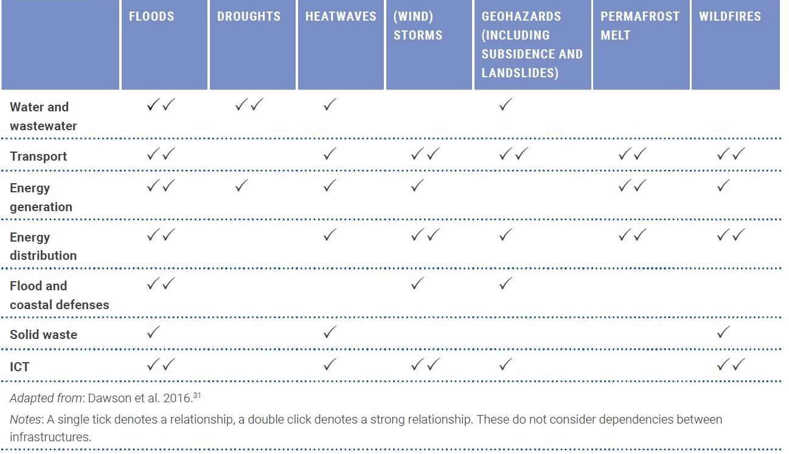

This mini-lecture provides an overview of the climate challenges facing infrastructure systems around the world and briefly reviews the options for adapting infrastructure systems in response to these challenges. It sets the scene for the analysis of climate risks to infrastructure which is presented in the following lectures.
Infrastructure systems (energy, transport, digital communications, water and waste management) sustain civilisations. Many of these systems are vulnerable to the impacts of climate change: sea level rise, river and surface water flooding, landslides, wildfires, permafrost melt, droughts and other extreme events. For example, Koks et al. (2019) estimated that more than 200,000km of roads are currently exposed to climate-related hazards worldwide, which could increase to 237,000km by 2050 because of climate change, without considering the new highway construction that will take place in that period (Hall et al. 2019).
Expansion and modernisation of infrastructure systems almost always accompany economic development. It is estimated that US$80 trillion of investment in new and existing infrastructure is required worldwide over the next 15 years (Thacker et al. 2019). Choices are being made now that will lock in risks for decades to come, threaten the viability of infrastructure investments, and burden countries with escalating economic and human impacts and repair costs (Hall et al. 2019).
To manage these risks, adaptation and resilience need to be embedded throughout the life cycle of infrastructure planning, project preparation, finance, design, delivery, operation and maintenance. Decision-makers need to recognise that infrastructure assets that can exist for decades or even centuries face a very uncertain future. Infrastructure investments need to be designed and implemented to cope with unpredictable threats and extreme events. Climate risk assessment provides crucial information to inform these decisions (Hall et al. 2019).
The following lecture blocks (8-14) will present the key knowledge, approaches and tools for assessing climate risk to infrastructure systems and how to make infrastructure more resilient for climate-compatible growth.
Given their central importance to the functioning of economies and societies, networked infrastructure systems represent particular points of vulnerability to climate change (see Figure 8.1). These can be categorised into three predominant types of climate risks (Hall et al. 2019):
Direct climate damage to infrastructure assets: Climate change is likely to exacerbate the damage that floods, storms, extreme temperatures, wildfires, landslides, permafrost melting, coastal erosion and other environmental hazards do to infrastructure networks. These hazards can completely destroy or badly damage assets in ways that render them inoperable and costly to replace or repair. In 2018, for example, the global economic impact of natural hazards alone was US$160 billion, of which 78% was climatological, 14% was hydrological and 8% was geophysical (Loew 2019).
Climate disruption to the operation of infrastructure networks: Service disruption can occur even without direct damage to infrastructure assets. Reservoirs may run dry during prolonged droughts, for instance, threatening water supplies and hydropower production. Climatic disruptions to infrastructure services impact users of those services, sometimes in places that are far from where the climate hazard actually hit (Steinbuks and Foster 2010). These impacts can ripple through the economy through knock-on effects upon supply chains (Hall, Berkhout, and Douglas 2015).
Infrastructure-induced exposure to climate hazards: Infrastructure enables development in hazardous locations like floodplains and mountainsides. Construction of transport infrastructure opens up places for development, increasing exposure to climate hazards. Increasing exposure is an inevitable consequence of development, but choices made about infrastructure often determine where and how development takes place and hence how much adaptation will be needed in the future. These development patterns then further influence the provision of infrastructure.

Figure 8.1: Examples of climate hazards to infrastructure sectors (Hall et al. 2019; Dawson et al. 2016)
Decisions about adapting infrastructure assets and networks need to be taken at a range of different scales. Design decisions for individual assets need to consider the projected climatic conditions that assets will be exposed to in the future. This may include increased flood levels in extreme events (e.g. due to sea level rise or changed rainfall patterns), or wind damage to infrastructure during hurricanes (including direct wind loads and the effect of falling/flying debris). There will always be a residual risk of a climatic extreme exceeding the design condition of any asset, especially as future climatic conditions are highly uncertain (Hall et al. 2019).
Adaptation can never be absolute and there can be no universal target for the standard of protection as climate risks and adaptation benefits depend on location and context. Nonetheless, it is reasonable and necessary to work towards a situation in which climate change is incorporated in the design and management of every infrastructure asset and flexible options are prioritised wherever feasible (see Table 8.1.1 for examples). This will be further explored in the following lectures. Engineering design standards and codes need to be applied and enforced, whilst nature-based solutions also offer ways of reducing risks that are more resilient in the long term and yield multiple co-benefits (see Lectures 15-18) (Hall et al. 2019).
Table 8.1.1: Examples of adaptation options for climate-proofing energy sub-sectors (Hall et al. 2019)
| Energy sub-sector | Technology and structural measures | Management and siting measures |
|---|---|---|
| Thermal and nuclear power |
|
|
| Hydropower |
tunnels/facilities
|
|
| Solar energy |
|
|
| Wind power |
|
|
| Transportation, transmission and distribution (T&D) |
|
|
| Ocean energy |
|
|
| Hydrogen production |
|
|
In addition to these asset-based adaptations, it is important to look at the big picture of how systemic resilience can be achieved (Hall et al. 2019):
Enhancing system resilience: The ways in which services are provided by infrastructure networks can often be made more resilient, in order to cope with and recover from extreme and disruptive events, for example through the development and operation of forecasting, warning and emergency management systems. Diversified supply chains with stocks that are sufficient to cope through an emergency are inherently more resilient than many of today’s just-in-time systems. Managing demand for water and energy enhances system resilience and saves the costs and impacts of consuming these resources. Financial instruments like direct payments and well-designed insurance can help people and asset owners to cope in extreme events.
Planning for sustainable infrastructure development: Often the greatest opportunities for managing climate risks exist in the early stages of planning and designing infrastructure systems. Questions of climate risk and adaptation need to be brought ‘upstream’ in long-term development and spatial planning, becoming mainstreamed in development policies and plans from the outset. Climate risks to infrastructure need to be considered on a broad spatial scale, which will open up more resilient options and help to avoid locking in vulnerability. Planning climate-resilient infrastructure development involves systems thinking for the long-term and exploring diverse options in a range of possible futures – which is a process that will yield better and more sustainable infrastructure worldwide.
This lecture has examined the nature of climate risks to infrastructure systems and the options available for adapting to those risks. There are many ways in which infrastructure can be adapted. Each approach requires considerations of how much adaptation to do, where and when. These are difficult decisions. Answering them properly relies upon the quantification of climate risks to infrastructure systems, both in the absence of adaptation and the residual risk that will inevitably remain once an adaptation has been implemented. The risk reduction that is achieved by an adaptation option is the benefit of that option, which needs to be compared with the cost, in order to choose what adaptation option(s) to adopt and when. The remainder of this lecture block therefore focuses on concepts and quantification of climate risks to infrastructure systems, and the use of risk analysis for adaptation planning.